Introduction
On Week 3 Day 2, I designed a custom enclosure for the Solar Dryer Project using Autodesk Fusion 360 and prepared it for fabrication using a Bamboo 3D Printer. The enclosure was designed to house ESP32, DHT11, and L298N modules while providing sufficient space, airflow, and mounting provisions. The process involved sketching, extrusion, offsets, screw hole creation, exporting, and finally 3D printing the completed model.
Step 1: Open Fusion & Start New Design
Launched Autodesk Fusion 360, created a new design file, and entered Sketch mode to begin modeling the enclosure.
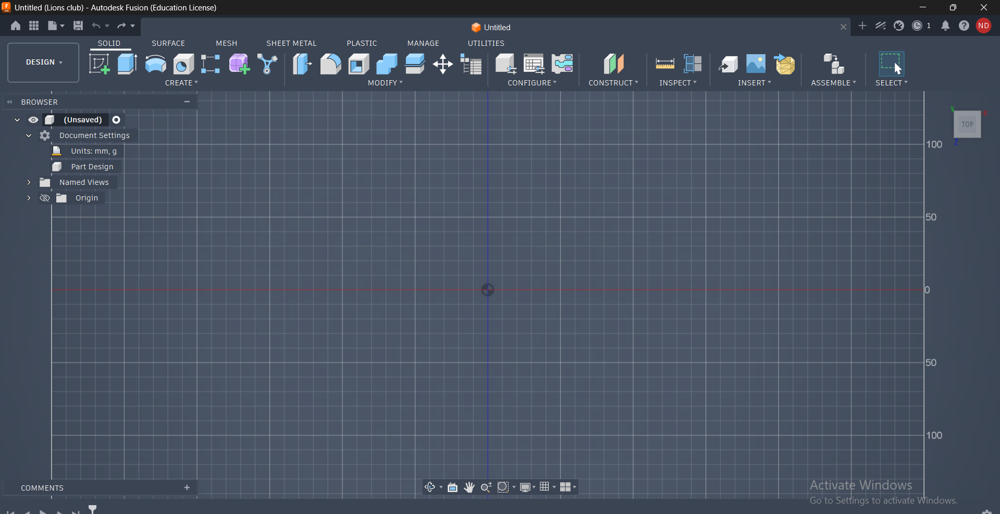
Step 2: Select Top Plane
Selected the Top Plane near the origin as the base construction plane for the box design.
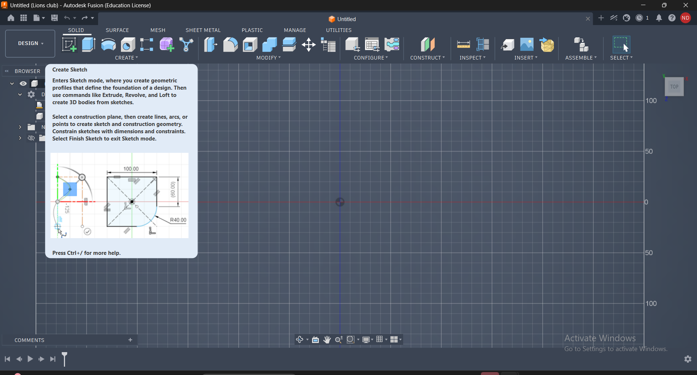
Step 3: Draw Rectangle
Used the Two-Point Rectangle tool to create the outer profile of the solar dryer enclosure.
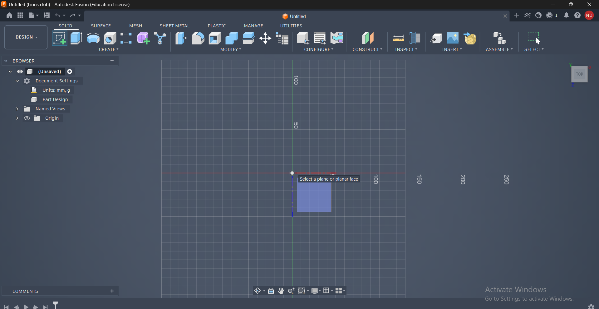
Step 4: Set Dimensions
Applied precise dimensions of 155 mm × 100 mm to define the size of the enclosure.
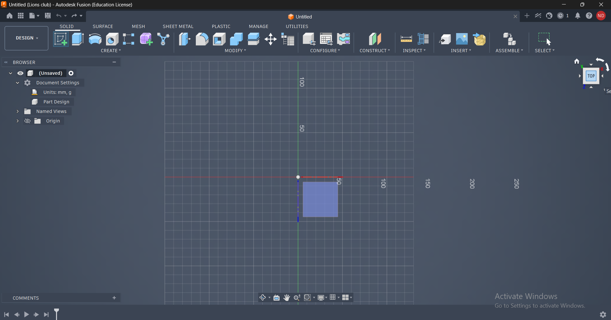
Step 5: Add Rounded Corners
Applied a 5 mm fillet to all corners to improve strength, safety, and overall appearance.
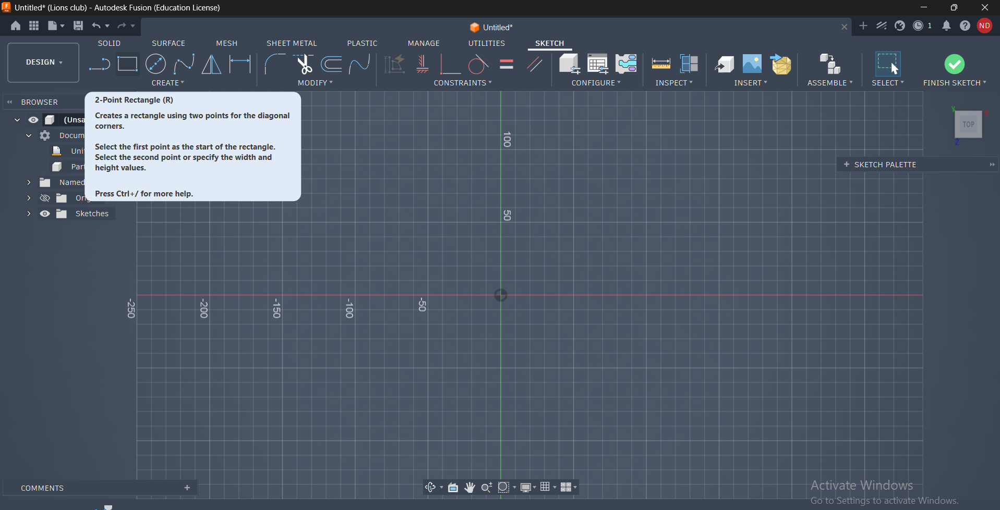
Step 6: Extrude Base
Extruded the rectangle sketch to a thickness of 3 mm, creating the base of the enclosure.
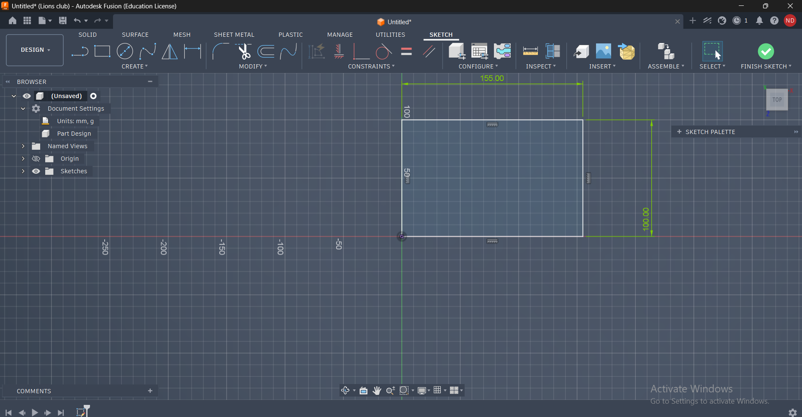
Step 7: Create New Sketch
Started a new sketch on the top face of the extruded base to create the wall structure.
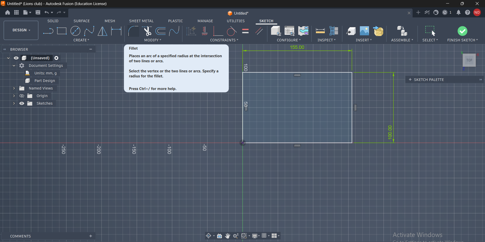
Step 8: Apply Offset
Used the Offset tool with a distance of -3 mm to create the wall profile.
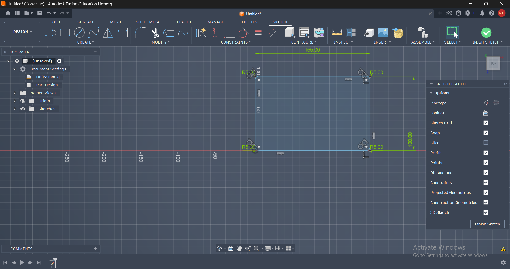
Step 9: Extrude Offset Section
Extruded the offset profile upward by 40 mm to form the enclosure walls.
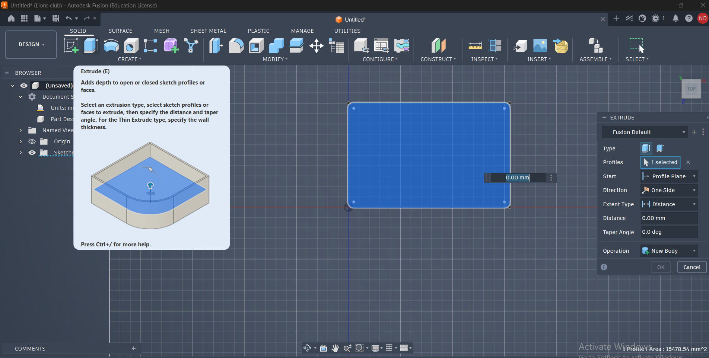
Step 10: Add Screw Fitting Circles
Created mounting holes using center diameter circles. Inner diameter was 4 mm and outer diameter was 6 mm.
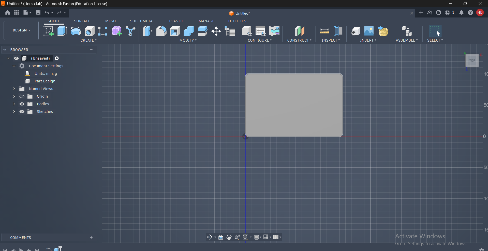
Step 11: Save File
Saved the design regularly to prevent accidental loss of work.
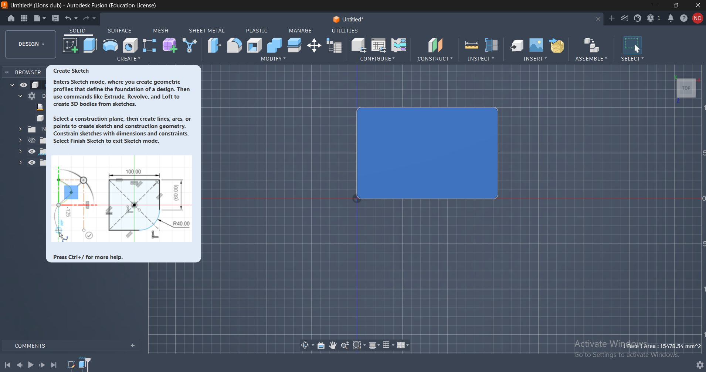
Step 12: Export Design
Used the Export option in Fusion 360 to prepare the file for printing.
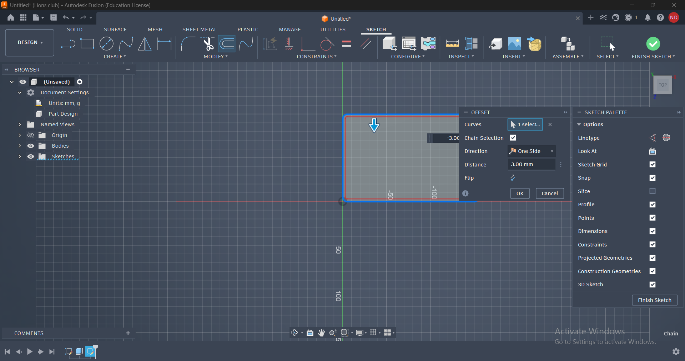
Step 13: Name & File Type
Named the file "solar dryer box" and selected Autodesk Fusion Archive (.f3d) format.
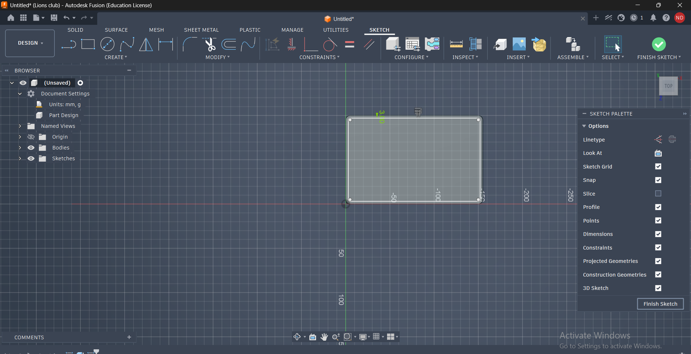
Step 14: Open in Bamboo Printer
Imported the design into Bamboo Studio, selected PLA filament, 0.2 mm layer height, and 20% infill settings.
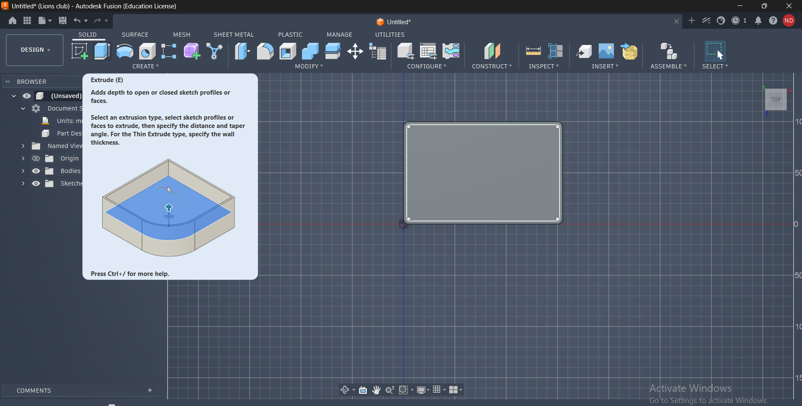
Step 15: Final Result
Successfully printed the enclosure. The final box included screw holes and was ready for installing ESP32, DHT11, and L298N modules.
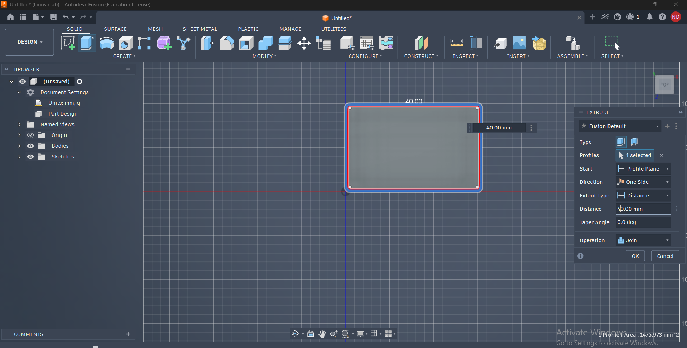
System Integration
1. Block Diagram
- ESP32 acts as the central controller of the Solar Dryer System.
- DHT11 → ESP32 (Temperature & Humidity Sensor Input)
- ESP32 → Relay Module (Heater Control)
- ESP32 → L298N Motor Driver (Fan Control)
- ESP32 → LED Matrix Display (System Status & Sensor Readings)
- LM2596 Buck Converter → ESP32 and all modules (Regulated Power Supply)
2. Power Flow
- Solar Panel / Battery → LM2596 Buck Converter
- LM2596 → ESP32
- LM2596 → Relay Module
- LM2596 → L298N Motor Driver
- LM2596 → LED Matrix Display
3. Signal Flow
- DHT11 sends temperature and humidity data to ESP32.
- ESP32 processes environmental data.
- ESP32 controls Relay Module for heater operation.
- ESP32 controls L298N Motor Driver for fan operation.
- ESP32 updates LED Matrix with system status and readings.
Logic Flow Programming
| Condition | Action |
|---|---|
| Humidity > 70% | Fan ON |
| Temperature < 35°C | Heater ON |
| Temperature 35°C - 45°C | Normal Operation |
| Temperature > 45°C | Heater OFF & Fan OFF |
| System Running | LED Matrix Displays TEMP and HUM Values |
Perfboard Layout
- ESP32: Center-right position for efficient GPIO routing.
- L298N Driver: Top-center position near fan wiring.
- Relay Module: Far-right edge for safer switching connections.
- LM2596 Buck Converter: Bottom-left position near power input.
- DHT11 Sensor: Connected to ESP32 for environmental monitoring.
- LED Matrix: Connected for displaying temperature, humidity and alerts.
Wiring Color Code
| Wire Color | Purpose |
|---|---|
| Red | VCC / Power Supply |
| Black | Ground (GND) |
| Green | Sensor Signal Lines |
| Brown / Blue | Control Signals between ESP32 and Modules |
Soldering Notes
- Underside pads were soldered neatly to create permanent electrical connections.
- Short and direct traces were used to reduce resistance and electrical noise.
- Clean solder joints prevented short circuits and improved reliability.
- Power and signal wires were routed separately.
- Modules were positioned to simplify maintenance and troubleshooting.
Step 16: Electronics Assembly and Wiring
The ESP32, DHT11 sensor, Relay Module, L298N Motor Driver, LM2596 Buck Converter, and LED Matrix Display were mounted on the sensor plate and interconnected according to the circuit design. Organized wiring and soldered connections were used to improve reliability and simplify troubleshooting. The completed assembly formed the central control unit of the Solar Dryer Project.

Outcome
- Designed a Solar Dryer Project Box using Autodesk Fusion 360.
- Applied dimensions, fillets, offsets, and screw hole features.
- Exported the design in Fusion Archive format.
- Prepared STL and slicing settings for 3D printing.
- Successfully fabricated the enclosure using a Bamboo Printer.
- Created a housing solution for ESP32, DHT11, and L298N modules.
Conclusion
Day 2 of Week 3 provided practical experience in CAD modeling, design optimization, and additive manufacturing. By designing and printing a custom enclosure, I learned how engineering designs move from digital models to physical products. The completed enclosure serves as an important component of the Solar Dryer Project and demonstrates the integration of design, fabrication, and embedded systems.